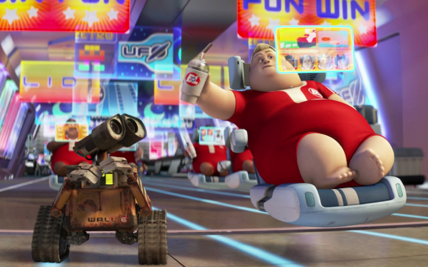

Professional identity
I’ve always been interested in combining technology together with creativity, even as a young child playing with Lego or an all in one electronic kits. As designer I aim to combine these interests in technology and creativity with my will to help people and/or solve problems. Next to these interests, I realized that I get a lot of fulfilment from making an idea reality with the use of technology. Seeing your own idea come to real life and especially solving the challenges that come with it is what I love to do and which also drives me as designer. Therefore, as designer I aim to specialize and develop in both rapid and high-fidelity prototyping together with technology like electronics to make your ideas reality (T&R), but also in including users in the design process to design products specialized for the intended user (U&S) and in ideating and brainstorming (C&A).
I am really motivated to perform the best I can, which also makes me enthusiastic to learn both in university and by myself. This means I also don’t mind to learn a lot to achieve what I want, especially when I start prototyping to make my idea reality. I'm generally also quite organized so that I can get all my work done.
However, my passion of realizing an idea also has its disadvantages, since I start thinking about how to realize an idea once I get enthusiastic about it. This makes me focus on only 1 idea, which limits me in exploring alternatives and being creative. However, I've noticed that getting conscious about this pitfall helps me avoid it by realizing when I start to focus too much on a specific idea. On top of that, my will to perform good makes me find it difficult to let go of tasks in a team that aren’t my responsibility (since this results in having less influence on how the task will get done).
Vision
I believe that design will be equally as not more important in the (near) future as it is right now. AI is getting larger and larger by already taking over tasks we did as human before. However, because I don't believe AI will become as good as a designer as humans, because of our qualities in creativity. However, I also believe design will be so important because we need to design ways to use and handle AI in our world.

The future I want to design against, image from the movie Wall-E (2008)
As designer I want to design and develop products that solve problems, create new experiences, or make older experiences more enjoyable. With this rapid development in AI, I believe we will be surrounded by automated products and services in the future. When thinking about such a future, I imagine these doom-scenarios where humans don’t have an active role in the world anymore (exaggerated vision in figure with Wall-e). However, I don’t believe this is what we as humanity want in the end and therefore I strive to design against this future. Therefore I aim to design (daily life) products for enhanced experiences and not let products remove a valuable experience for us.
However, while exploring this vision, I have realized that there is a thin line between enhancing user experience and automating an experience. When a product automates a simple (maybe not so valuable) daily task, is it then automation to enhance someone's daily experience? Where is the line of automation making someone’s life more interesting or more boring? As designer I want to explore where I believe this line is, together with my designs.